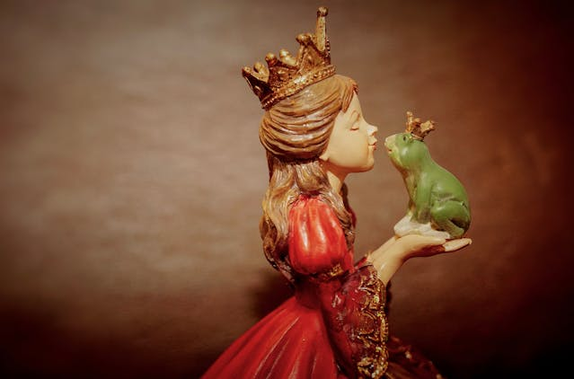

Fan-made for CS50 • Not affiliated with Disney
Fan-made for CS50 • Not affiliated with Disney

After the incredible success of Disneyland in California, Walt Disney dreamed of building a second,
even larger park—a place where he could bring to life his bold vision of a utopian city and immersive entertainment.
In the early 1960s, Walt began secretly purchasing thousands of acres of swampland in
Central Florida under fake company names to avoid skyrocketing land prices.
By the time the public realized what was happening,
Disney had quietly acquired over 27,000 acres near Orlando.
Walt called the new venture “The Florida Project,” and it was meant to include not just a theme park, but hotels, recreation areas, and most importantly, the Experimental Prototype Community of Tomorrow—EPCOT—a real city that would test new ideas in urban living.
Tragically, Walt Disney passed away in 1966 before construction began. Heartbroken but determined, his brother Roy O. Disney took over leadership. He postponed retirement and made it his mission to fulfill Walt’s vision. Roy insisted the project be named Walt Disney World, so people would never forget the man behind the dream.
Construction began in 1967. Crews had to drain swampy land, reroute water with an elaborate canal system,
and build infrastructure from scratch. The first phase focused on the Magic Kingdom theme park,
two resort hotels (the Contemporary and the Polynesian Village),
and a transportation system that included monorails and ferryboats.
Finally, on October 1, 1971, Walt Disney World opened its gates.
Roy Disney gave a touching speech dedicating the park to his brother, calling it “Walt Disney World” in his honor.
Sadly, Roy died just a few months later.
From a swampy wilderness to a world-class destination, Walt Disney World became the living legacy of
Walt Disney’s imagination, built by those who believed in making dreams come true.
© 1966 The Walt Disney Company. All rights reserved.